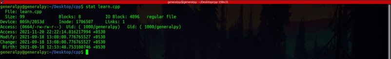
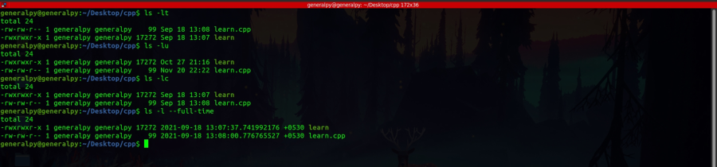
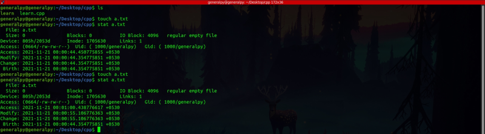
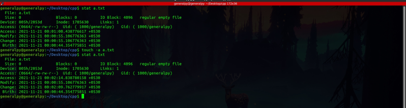
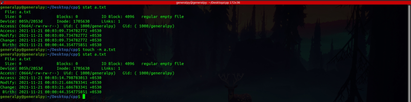
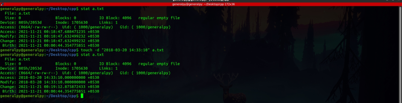
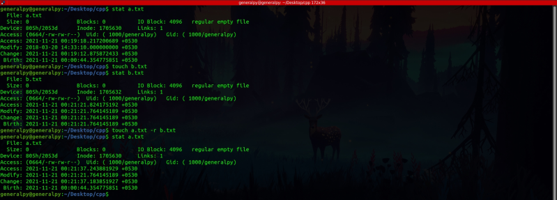
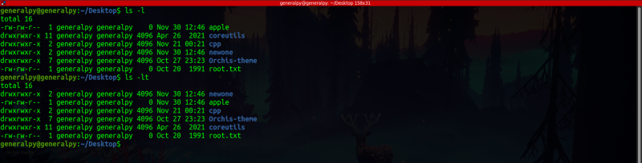
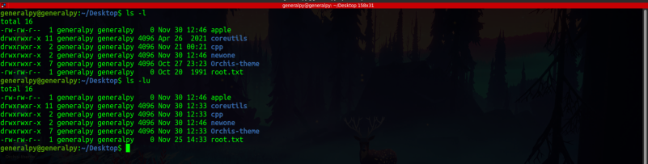
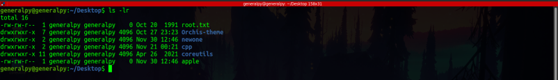

Every file on linux has 3 time stamps :
1. Access Time(atime) : This is the last time when file was read or was accessed by any other program for reading purposes.
2. Modify Time(mtime) : This is the last time when file contents were modified.
3. Change Time(ctime) : This is the last time when file's Metadata was edited(like owner,permissions etc.).
These file time stamps can be seen by either using stat command or by using ls options.

Here Access is atime, Modify is mtime and Change is ctime. Birth shows creation time of file(exfat feature not available everywhere). Timestamps are stored in seconds after midnight of 1 Jan 1970(epoch).
-l or -lt shows mtime of the file using ls.
-lu shows atime of the file using ls.
-lc shows ctime of the file using ls.
Sometimes -l doesn't show time stamp with max precision which can be fixed by adding --full-time flag.

We can also change file timestamps using touch command. The touch command creates an empty file if it doesn't exists but if it does exist then touch update timestamps to computer's current time.

If we only want to change atime we can use -a flag. This will also change ctime as metadata like timestamp of file is changed.

If we only want to change mtime we can use -m flag. This will also change ctime.

To change atime or mtime to a particular time instead of system time we can use -t flag
touch -m -t yrmondayhrmin.sec fileName
#there are multiple date fomats supported.
#here the yr is year in, mon is month,hr is hour, min is minute and sec is second
To modify both atime and mtime at once to a specific time we use -d flag.
touch -d "date time string" fileName
#This also accepts multiple date time formats

To copy timestamps of one file to another we use -r flag with touch command
touch file1 -r file2
#copies timestamp of file2 to file1

It is not possible to change ctime but we can use a trick. Simply system time to desired time, use touch command and then set atime and mtime to their initial values.
Sorting files by timestamp
By default ls -l command lists items sorted in alphabetical order and time shown there is mtime.
To sort items according to mtime, use -t flag.
ls -l -t or ls -lt

To sort items according to atime use -u flag. This will also show atime along with sorting according to atime.
ls -l -u or ls -lu

To sort items in reverse order use -r or --reverse flag, applicable to every type of sorting.
